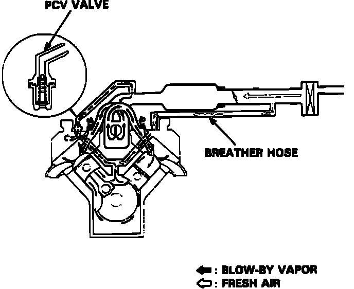

Positive Crankcase Ventilation: Description and Operation
Positive Crankcase Ventilation System:

PURPOSE
The Positive Crankcase Ventilation System prevents crankcase "blow-by" gases from escaping into the atmosphere. "Blow-by" is the compressed gas that blows past the cylinder-to-piston clearance. It contains high concentrations of CO and HC.
SYSTEM OPERATION
During partial throttle opening, manifold vacuum draws fresh air through a tube connected to the air cleaner into the rocker cover and crankcase, thereby drawing the blow-by gas through the PCV valve into the intake air stream.
During low vacuum conditions (full throttle or heavy engine load) the manifold vacuum is insufficient to draw the gases through the valve, so gases flow in the reverse direction, being drawn into the air cleaner and then into the intake air stream.
On engines with excessive blow-by, some of the gases will flow into the air cleaner under all conditions.
PCV VALVE OPERATION
The PCV Valve, located in the left valve cover, meters air flow in the system at a rate that depends on manifold vacuum. The function of the PCV valve is to restrict the flow of crankcase emissions when vacuum is high to preserve idle stability.